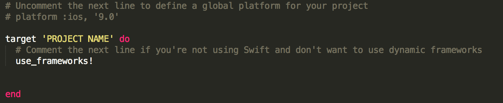
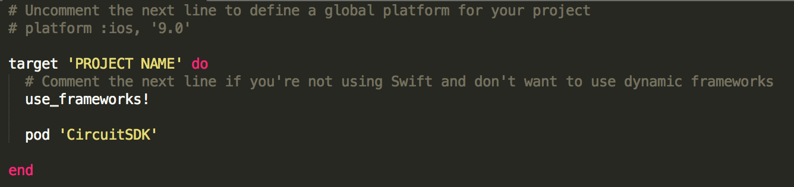
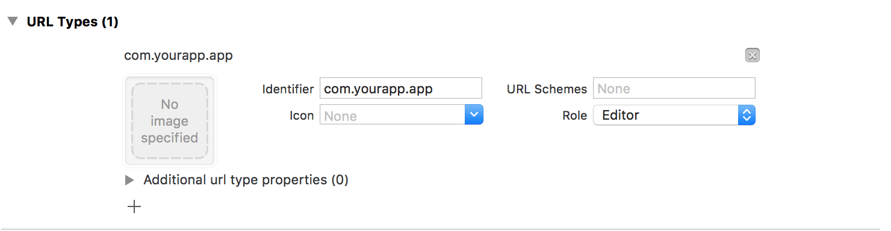

Introduction
Welcome to the Circuit iOS SDK. You can use the provided API to build a text or media mobile application for iOS.
We have language examples in Objective-C and Swift. You can view the code examples in the dark panel to the right, and can switch the programming language of the examples with the tabs in the top right.
Getting Started
Before we can start building an application we need to install CircuitSDK to the your project.
Installing CocoaPods
First of all, make sure you have CocoaPods installed on your system.
To install CocoaPods make sure you have latest Xcode, open the terminal and run the following command below:
sudo gem install cocoapod
Setting up CocoaPods
For the CircuitSDK to run properly, you must setup your project with CocoaPods. In the terminal navigate to your project folder and run the command below:
pod init
pod init sets up a PodFile for your project
The file should look like this where PROJECT NAME is your project name

Installing CircuitSDK
Once CocoaPods is installed you are ready to add and install the pod CircuitSDK
Open your Podfile in Xcode, do not use TextEdit as TextEdit uses smart quotes which will generate errors upon trying to install the pod
Under target 'PROJECT NAME' (is your project name) add the following
pod 'CircuitSDK'
This tells CocoaPods you want to use the CircuitSDK pod with your project, save the Podfile.
Your Podfile should look like the example below

Now in the terminal navigate to your project folder containing the Podfile, run the command below to install the CircuitSDK pod:
pod install
The cocoaPods will download the latest CircuitSDK with the related dependencies.
Lastly get the WebRTC dependency (Source/libCKTNavigator.a).
Simply from project repo run in terminal:
curl -X GET -o "Source/libCKTNavigator.a" "https://www.googleapis.com/storage/v1/b/circuit-ios-sdk/o/lib
CircuitSDK uses SocketRocket pod
Authorization
If you do not have any client credentials first sign up for a developer account here
Once your account is approved navigate to Circuit App Registration and follow the instructions to obtain the credentials
Once you receive them you are ready to run the sample application and create your own.
Setting up your project
Once you successfully end up with the sections above, you will be ready to use CircuitSDK in your project. Simply import the SDK to your class file and you are ready to go.
#import <CircuitSDK/CircuitSDK.h>
import CircuitSDK
CKTClient.h
All client functions are implemented in their respective extensions
CKTClient+Auth
initializeSDK:oAuthClientSecret:oAuthScope:
[client initializeSDK:@"ADD CLIENT_ID"
oAuthClientSecret:@"ADD CLIENT_SECRET"
oAuthScope:@"ADD OAUTH_SCOPE"];
CKTClient().initializeSDK("ADD CLIENT ID",
oAuthClientSecret: "ADD CLIENT SECRET",
oAuthScope: "ALL")
It's a good idea to initialize the SDK when the application launches, this can be done in the AppDelegate file.
Application scope should be a comma delimited string that can contain any of the following:
| SCOPE |
|---|
| ALL |
| READ_USER_PROFILE |
| WRITE_USER_PROFILE |
| READ_CONVERSATIONS |
| WRITE_CONVERSATIONS |
| READ_USER |
| CALLS |
We use a framework called AppAuth to help with OAuth 2.0 authentication.
AppAuth takes your CLIENT_ID and CLIENT_SECRET and returns to you an access token,
you can the use this access token to logon.
See AppAuth-iOS for examples using AppAuth
Remember to set your redirectURI you created when registering your application, this redirectURI tells AppAuth how to get back to your application after authentication has completed.
Setting your redirectURI can be done in the Info section of your applications project settings
See the image below for an example:

renewToken:
[client renewToke:^{
// Code goes here
}];
CKTClient().renewToken {
// Code goes here
}
Renew the OAuth2 access token of the current user
| Parameter | Type | Description |
|---|---|---|
| completion | callback | A completion block that takes either a new access token or an error and returns void |
revokeToken:completion:
[client revokeToken:@"ACCESS TOKEN"
completion:^{
// Code goes here
}];
CKTClient().revokeToken("ACCESS TOKEN", {
// Code goes here
})
Revoke the OAuth2 access token
Required OAuth2 scopes: N/A
| Parameter | Type | Description |
|---|---|---|
| token | string | Access token, if omitted the internally used access toke is revoked. |
| completion | callback | A completion block that takes either a new access token or an error and returns void |
setOAuthConfig:clientSecret:
[client setOAuthConfig:@"CLIENT_ID" setOAuthConfig:@"CLIENT_SECRET"];
CKTClient().setOAuthConfig("CLIENT_ID", setOAuthConfig:"CLIENT_SECRET)
Sets the configuration for OAuth Authentication without scope
Use this method when you want the application to request all permissions
| Parameter | Type | Description |
|---|---|---|
| clientId | string | Application CLIENT_ID |
| clientSecret | string | Application CLIENT_SECRET |
setOAuthConfig:clientSecret:scope:
[client setOAuthConfig:@"CLIENT_ID"
setOAuthConfig:@"CLIENT_SECRET"
scope:@"SCOPE"];
CKTClient().setOAuthConfig("CLIENT_ID", setOAuthConfig:"CLIENT_SECRET, scope:"SCOPE")
Sets the configuration for OAuth Authentication with scope
Use this method when you want to determine which permissions the application requests.
This could be any of the following in a comma deliminated string
- ALL
- READ_USER_PROFILE
- WRITE_USER_PROFILE
- READ_CONVERSATIONS
- WRITE_CONVERSATION
- READ_USER
- CALLS
| Parameter | Type | Description |
|---|---|---|
| clientId | string | Application CLIENT_ID |
| clientSecret | string | Application CLIENT_SECRET |
| scope | string | Application scope |
validateToken:completion:
[client validateToken:@"ACCESS TOKEN"
completion: ^{
// Code goes here
}];
CKTClient().validateToken("ACCESS TOKEN", {
// Code goes here
})
Validates the OAuth2 access token
Required OAuth2 scopes: N/A
| Parameter | Type | Description |
|---|---|---|
| accessToken | string | Access token, if not provided, current access token of the client instance is validated. |
| completion | callback | A completion block that takes no arguments and returns void. |
CKTClient+Logon
logon:completion:
[client logon:@"ADD YOUR ACCESS TOKEN" completion:^(NSDictionary *user, NSError *error) {
// Code goes here
}];
CKTClient().logon("ADD YOUR ACCESS TOKEN") { (user, error) in
// Code goes here
}
Logs user into server via given access token. OAuth2 accessToken logon.
| Parameter | Type | Description |
|---|---|---|
| completion | callback | A completion block that takes either a user or an error and returns void |
logon:password:completion:
[self logon:@"USER_NAME" password:@"PASSWORD" completion:^(NSDictionary *user, NSError *error) {
// Code goes here
}];
CKTClient().logon("USER_NAME" , password: "PASSWORD") { (user, error) in
// Code goes here
}
Logs user into server via given credentials.
This grant type should only be used if other flows are not viable. Also, it should only be used if the application is trusted by the user.
| Parameter | Type | Description |
|---|---|---|
| username | string | Username (email) for Resource Owner Grant Type |
| password | string | Password for Resource Owner Grant Type |
| completion | callback | A completion block that takes either a user or an error and returns void |
logout:completion:
[client logout:^{
// Code goes here
}];
CKTClient().logout {
// Code goes here
}
Log this client instance out. Logging out does not revoke the OAuth2 access token
| Parameter | Type | Description |
|---|---|---|
| completion | callback | A completion block that takes no arguments and returns void |
CKTClient+User
getLoggedOnUser:copmletion:
[client getLoggedOnUser:^(NSDictionary *user, NSError *error) {
// Code goes here
}];
CKTClient().getLoggedOnUser({ (user, error) in
// Code goes here
})
Returns the current logged on user in JSON format
| Parameter | Type | Description |
|---|---|---|
| completion | callback | A completion block that takes either the current logged on user or an error |
getPresence:full:completion:
[client getPresence:@[ "USER ID(s)" ],
full:YES,
completion:^(id presence, NSError *error) {
// Code goes here
}];
CKTClient().getPresence([ "USER ID(s)" ],
full: true) { (presence, error) in
// Code goes here
}
Get the presence for a list of user id's
Required OAuth 2 scopes: READ_USER or ALL
| Parameter | Type | Description |
|---|---|---|
| userIds | array | Array of single or multiple user id's |
| full | boolean | If true, detailed presence is returned, which also includes long/lat, timezone, etc |
| completion | callback | A completion block that takes either presence or an error and returns void |
getStatusMessage:completion:
[client getStatusMessage:^(id status, NSError *error) {
// Code goes here
}];
CKTClient().getStatusMessage { (status, error) in
// Code goes here
}
Get the status message of the logged in user
Required OAuth2 scopes: READ_USER_PROFILE or ALL
| Parameter | Type | Description |
|---|---|---|
| completion | callback | A completion block that takes either a status message or an error and returns void. |
getTenantUsers:completion:
[client getTenantUsers:@{ OPTIONS },
completion:^(id users, NSError *error) {
// Code goes here
}];
CKTClient().getTenantUsers(["OPTIONS DICTIONARY"]) { (users, error) in
// Code goes here
}
Get the users for this tenant/domain. This API required tenant admin privileges
Required OAuth2 scopes: ALL and only by tenant admins
| Parameter | Type | Description |
|---|---|---|
| options | dictionary | Filter options |
| completion | callback | A completion block that takes either users or an error and returns void. |
getUserByEmail:completion:
[client getUserByEmail:@"ADD EMAIL" completion:^(NSDictionary *user, NSError *error) {
// Code goes here
}];
CKTClient().getUserByEmail("ADD EMAIL") { (user, error) in
// Code goes here
}
Returns the user in JSON format by the given user email.
| Parameter | Type | Description |
|---|---|---|
| string | Email of the user to retrieve | |
| completion | callback | A completion block that takes either a user or an error and returns void |
getUsersByEmail:completion:
[client getUsersByEmail:@[ "ADD EMAIL" ] completion:^(NSDictionary *users, NSError *error) {
// Code goes here
}];
CKTClient().getUsersByEmail([ "ADD EMAIL" ]) { (users, error) in
// Code goes here
}
Returns the users in JSON format by the given array of email addresses.
| Parameter | Type | Description |
|---|---|---|
| emails | array | Array of email addresses of the users to retrieve |
| completion | callback | A completion block that takes either a user or an error and retutns void |
getUserById:completion:
[client getUserById:@"ADD USER ID" completion:^(NSDictionary *user, NSError *error) {
// Code goes here
}];
CKTClient().getUserById("ADD USER ID") { (user, error) in
// Code goes here
}
Returns the user in JSON format by the given user ids
| Parameter | Type | Description |
|---|---|---|
| userId | string | ID of the user to retrieve |
| completion | callback | A completion block that takes either a user or an error and returns void |
getUsersById:completion:
[client getUsersById:@[ "ADD USER ID" ] completion:^(NSDictionary *users, NSError *error) {
// Code goes here
}];
CKTClient().getUsersById([ "ADD USER ID" ]) { (users, error) in
// Code goes here
}
Returns the users in JSON format by the given array of user id's
| Parameter | Type | Description |
|---|---|---|
| userId | array | ID of the user to retrieve |
| completion | callback | A completion block that takes either users or an error and returns void |
getUsersById:limited:completion:
[client getUsersById:[@"ADD USER ID"] limited:YES completion:^(NSDictionary *user, NSError *error) {
// Code goes here
}];
CKTClient().getUsersById(["ADD USER ID"], limited:true) { (user, error) in
// Code goes here
}
Returns the user in JSON format by the given user ids
| Parameter | Type | Description |
|---|---|---|
| userId | array | ID of the user to retrieve |
| limited | bool | If true, a limited user object is retrurned with the most important attributes. Default is false. |
| completion | callback | A completion handler that takes either a dictionary of users or an error and returns void. |
getUserSettings:completion:
[client getUserSettings:^(id settings, NSError *error) {
// Code goes here
}];
CKTClient().getUserSettings { (settings, error) in
// Code goes here
}
Get all the user settings of the logged in user
Required OAuth2 scopes: READ_USER_PROFILE or ALL
updateUser:completion:
[client updateUser:@["USER ATTRIBUTES"] completion:^(void) {
// Code goes here
}];
CKTClient().updateUser("USER ATTRIBUTE") { (void) in
// Code goes here
}
| Parameter | Type | Description |
|---|---|---|
| user | dictionary | ictionary containing the user attributes to update |
| completion | callback | A completion block that takes no arguments and returns void. |
Response
{
accounts = (
{
accountId = "USER ACCOUNT ID";
accountStatus = ACTIVE;
accountTemplateName = USER;
canLogon = 1;
creationTime = 0;
isDefault = 1;
isExpired = 0;
isInGracePeriod = 0;
lastAccess = LAST ACCESS TIME;
parentPackageId = "PARENT PACKAGE ID";
parentPackageName = "PARENT PACKAGE NAME";
permissions = ( ARRAY OF SYSTEM PERMISSION );
tags = ( ARRAY OF SYSTEM TAGS );
tenantId = "USER TENANT ID";
userId = "USER ID";
}
);
apiVersion = "SDK API VERSION";
avatar = "USER AVATAR URL";
avatarLarge = "USER LARGE AVATAR URL";
callerId = "";
clientId = "CLIENT ID";
company = "";
cstaNumber = "";
displayName = "USER FULL NAME";
emailAddress = "USER EMAIL ADDRESS";
firstName = "USER FIRST NAME";
hasAvatar = 1;
hasPermission = {
};
isExternallyManaged = 0;
jobTitle = "USER JOB TITLE";
lastName = "USER LAST NAME";
locale = "LOCALE SPECIFICATION";
phoneNumber = "USER PHONE NUMBER";
userId = "USER ID";
userPresenceState = {
isOptedOut = 0;
mobile = 0;
poor = 0;
state = OFFLINE;
userId = "USER ID";
};
userState = ACTIVE;
userType = REGULAR;
}
| Parameter | Type | Description |
|---|---|---|
| accounts | array | User account details |
| apiVersion | string | JavaScript sdk api version |
| avatar | string | User avatar url |
| avatarLarge | string | User large avatar url |
| callerId | string | |
| clientId | string | Client ID |
| company | string | User company name |
| cstaNumber | string | |
| displayName | string | User full name |
| emailAddress | string | User email address |
| firstName | string | User first name |
| hasAvatar | bool | If the user has an avatar |
| hasPermission | json | Permission the user has |
| isExternallyManaged | bool | |
| jobTitle | string | User job title |
| lastName | string | User last name |
| locale | string | Locale specification |
| phoneNumber | string | User phone number |
| userId | string | User id |
| userPresenceState | json | |
| userState | string | Current user status |
| userType | string | User type |
CKTClient+Conversation
addParticipant:userIds:completion:
[client addParticipant:@"CONVERSATION ID",
userIds:@["USER ID(s)"],
completion:^{
// Code goes here
}];
CKTClient().addParticipant("CONVERSATION ID",
userIds: ["USER ID(s)"],
completion: {
// Code goes here
})
Add new participants to a group conversation or community
Required OAuth2 scopes: WRITE_CONVERSATIONS or ALL
| Parameter | Type | Description |
|---|---|---|
| convId | string | Conversation ID to add the participant to. |
| userIds | array | Array containing a single or multiple user ids |
| completion | callback | A completion block that takes no arguments and returns void. |
addTextItem:content:completionHandler:
Adding an item with the string content type
[client addTextItem:@"CONVERSATION ID" content:@"TEXT CONTENT" completion:^(id content, NSError *error) {
// Code goes here
}];
CKTClient().addTextItem("CONVERSATION ID", content: "TEXT CONTENT") { (content, error) in
// Code goes here
}
Adding an item with the object content type
NSDictionary *content = @{ @"parentId": @"PARENT CONVERSATION ID",
@"contentType": @"PLAIN",
@"subject": @"SUBJECT",
@"content": @"TEXT CONTENT",
@"attachments": @[ PHOTO OR VIDEO ] };
[client addTextItem:@"CONVERSATION ID" content:content completion:^(id content, NSError *error) {
// Code goes here
}];
let content = [ "parentId": "PARENT CONVERSATION ID",
"contentType": "PLAIN",
"subject": "SUBJECT",
"content": "TEXT CONTENT",
"attachments": [ PHOTOT OR VIDEO ] ]
CKTClient().addTextItem("CONVERSATION ID", content: content) { (content, error) in
// Code goes here
}
Adds an item to a conversation, this method can take one of two types
| Type | Description |
|---|---|
| string | Text content |
| object | Item object |
The item object can contain any of the following
| Option | Type | Description |
|---|---|---|
| parentId | string | The id of the parent post if this is a reply |
| contentType | string | Either PLAIN or RICH, default is RICH. Whether the content is rich text (HTML) or plain text |
| subject | string | Subject/Title of the message. Only supported for parent post (i.e. parentId omitted) |
| content | string | Actual text content |
| attachments | array | Picture or video attachments |
| Parameter | Type | Description |
|---|---|---|
| content | string object | Content for the item |
| completion | callback | A completion block that takes either the sent content or an error and returns void |
createCommunity:topic:description:completion:
[client createCommunity:@["USER ID(s)"],
topic:@"COMMUNITY TOPIC",
description:@"COMMUNITY DESCRIPTION",
completion:^(NSDictionary *community, NSError *error) {
// Code goes here
}];
CKTClient().createCommunity(["USER ID(s)"],
topic: "COMMUNITY TOPIC",
description: "COMMUNITY DESCRIPTION",
completion: { (community, error) in
// Code goes here
})
Creates a new community
Required OAuth2 scopes: WRITE_CONVERSATIONS or ALL
| Parameter | Type | Description |
|---|---|---|
| participants [optional] | array | User ID(s) of the user(s) to create a community with. |
| topic [optional] | string | Topic of the community. |
| description [optional] | string | Description of the community. |
| completion | callback | A completion block that takes either a community or an error and returns void. |
createConferenceBridge:completion:
[client createConferenceBridge:@"TOPIC"
completion:^(NSDictionary *conversation, NSError *error) {
// Code goes here
}];
CKTClient().createConferenceBridge("TOPIC", { (conversation, error) in
// Code goes here
})
Create a new conference bridge conversation.
Required OAuth2 scopes: WRITE_CONVERSATIONS or ALL
| Parameter | Type | Description |
|---|---|---|
| topic | string | Topic of the conversation |
| completion | callback | A completion block that takes either a conversation or an error and returns void. |
createDirectConversation:completion:
[client createDirectConversation:@"PARTICIPANT ID" completion:^(NSDictionary *conversation, NSError *error) {
// Code goes here
}];
CKTClient().createDirectConversation("PARTICIPANT ID") { (conversation, error) in
// Code goes here
}
Creates a direct conversation from with the participant of the given id
| Parameter | Type | Description |
|---|---|---|
| participantId | string | Participant id to create a direct conversation with |
| completion | callback | A completion block that takes either the conversation created or an error and returns void |
createGroupConversation:title:completionHandler
[client createGroupConversation:@[ @"PARTICIPANT ID" ] title:@"TITLE" completionHandler:^(NSDictionary *conversation, NSError *error) {
// Code goes here
}];
CKTClient().createGroupConversation([ "PARTICIPANT ID" ], title:"TITLE") { (conversation, error) in
// Code goes here
}
Creates a group conversation from an array of participant id's
| Parameter | Type | Description |
|---|---|---|
| participantId | array | Array of participant id's to create a group conversation with |
| topic | string | Title of the conversation to be created |
| completion | callback | A completion block that takes either the conversation created or an error and returns void |
flagItem:itemId:completion:
[client flagItem:@"CONVERSATION ID"
itemId:@"ITEM ID"
completion:^{
// Code goes here
}];
CKTClient().flagItem("CONVERSATION ID",
itemId:"ITEM ID") {
// Code goes here
}
Flag an item. Flags are user specific
Required OAuth2 scopes: WRITE_CONVERSATIONS or ALL
| Parameter | Type | Description |
|---|---|---|
| conversationId | string | Id of the conversation where the item exists |
| itemId | string | Id of the item to be flagged |
| completion | callback | A completion block that takes no arguments and returns void |
getConversations:
[client getConversations: ^(NSArray *conversations, NSError *error) {
// Code goes here
}];
CKTClient().getConversations() { (conversations, error) in
// Code goes here
}
Returns the conversations of the logged on user in JSON format
| Parameter | Type | Description |
|---|---|---|
| options [optional] | dictionary | A dictionary of options to filter conversations |
| completion | callback | A completion block that takes either conversations or an error and returns void |
getConversations:completionHandler:
NSDictionary *options = @{ @"direction": @"BEFORE",
@"timestamp": @1264378424,
@"numberOfConversations": @10
@"numberOfParticipants": @5
};
[client getConversations:options completionHandler:^(NSArray *conversations, NSError *error) {
// Code goes here
}];
let options = [ "direction": "BEFORE",
"timestamp": 1264378424,
"numberOfConversations": 10,
"numberOfParticipants": 5 ]
CKTClient().getConversations(options) { (conversations, error) in
// Code goes here
}
Returns the conversations of the logged on user in JSON format, you can pass in a dictionary of options or set this to nil depending on how you want to retrieve conversations.
| Option | Type | Description |
|---|---|---|
| direction | string | Whether to get the conversations BEFORE or AFTER a certain timestamp, default is BEFORE |
| timestamp | number | Timestamp used in conjunction with the direction option, default is current timestamp |
| numberOfConversations | number | Maximum number of conversations to retrieve, default is 25 |
| numberOfParticipants | number | Maximum number of participants to return in the participants array. Default is 8 |
| Parameter | Type | Description |
|---|---|---|
| options [optional] | dictionary | A dictionary of options to filter conversations |
| completion | callback | A completion block that takes either conversations or an error and returns void |
getConversationById:completionHandler:
[client getConversationById:@"CONVERSATION ID"
completionHandler:^(NSDictionary conversation, NSError *error){
// Code goes here
}]
CKTClient().getConversationById("CONVERSATION ID") { (conversation, error) in
// Code goes here
}
Get the conversation by conversation Id.
| Parameter | Type | Description |
|---|---|---|
| convId | string | Conversation Id |
| completion | callback | A completion block that takes either conversations or an error and returns void. |
getConversationDetails:completion:
[client getConversationDetails:@"CONVERSATION ID"
completion:^(NSArray *details, NSError *error) {
// Code goes here
}];
CKTClient().getConversationDetails("CONVERSATION ID") { (details, error) in
// Code goes here
}
Get the conversation details such as the bridge number and guest link.
Required OAuth2 scopes: READ_CONVERSATIONS or ALL.
| Parameter | Type | Description |
|---|---|---|
| convId | string | Conversation Id of the items to retrieve |
| completion | callback | A completion block that takes either conversation details or an error and returns void |
getConversationFeed:options:completion:
NSDictionary *options = @{ @"timestamp" : 1264378424,
@"minTotalItems" : 15,
@"maxTotalUnread" : 30,
@"commentsPerThread" : 5,
@"maxUnreadPerThread" : 2};
[client getConversationFeed:@"CONVERSATION ID"
options: options
completion:^(NSArray *feed, NSError *error) {
// Code goes here
}];
let options = [ @"timestamp" : 1264378424,
@"minTotalItems" : 15,
@"maxTotalUnread" : 30,
@"commentsPerThread" : 5,
@"maxUnreadPerThread" : 2 ]
CKTClient().getConversationItems("CONVERSATION ID",
options: options) { (feed, error) in
// Code goes here
}
Retrieve items of a conversation in a threaded structure before a specific timestamp. Allows specifying how many comments per thread to retrieve, and also how many unread messages of a thread to retireve.
Required OAuth2 scopes: READ_CONVERSATIONS or ALL
| Parameter | Type | Description |
|---|---|---|
| convId | string | Conversation Id of the items to retrieve |
| options | dictionary | Dictionary containing specific options |
| completion | callback | A completion block that takes either a conversation feed or an error and returns void |
getConversationItems:options:completion:
NSDictionary *options = @{ @"direction": @"BEFORE",
@"creationTime": @1264378424,
@"numberOfConversations": @10 };
[client getConversationItems:@"CONVERSATION ID"
threadId:@"THREAD ID"
options: options
completion:^(NSArray *items, NSError *error) {
// Code goes here
}];
let options = [ "direction": "BEFORE",
"creationTime": 1264378424,
"numberOfConversations": 10 ]
CKTClient().getConversationItems("CONVERSATION ID",
threadId: "THREAD ID",
options: options) { (items, error) in
// Code goes here
}
Returns the conversation items in JSON format by the given conversation id. You can pass a dictionary of options or leave this nil for defaults.
| Option | Type | Description |
|---|---|---|
| modificationDate | number | Mutually exclusive with creationTime, default is current timestamp |
| creationTime | number | Mutually exclusive with modificationTime, default is current timestamp |
| direction | string | Whether to get the conversations BEFORE or AFTER a certain timestamp, default is BEFORE |
| numberOfItems | number | Maximum number of conversation items to retrieve, default is 25 |
| Parameter | Type | Description |
|---|---|---|
| convId | string | Conversation id for the items to retrieve |
| threadId | string | Item Id of the initial post of the thread |
| options [optional] | dictionary | Options to filter the conversation items |
| completion | callback | A completion block that takes either conversation items or an error and returns void |
getConversationParticipants:options:completion:
NSDictionary *options = @{ @"pageSize": @20,
@"includePresence": @(YES) };
[client getConversationParticipants: @"CONVERSATION ID"
options: options
completion:^(NSDictionary *participants, NSError *error) {
// Code goes here
}];
let options = ["pageSize": 20,
"includePresence": true ]
CKTClient().getConversationParticipants("CONVERSATION ID",
options: options) { (participants, error) in
// Code goes here
}
Retrieve conversation participants using optional search criteria
Required OAuth2 scopes: READ_CONVERSATIONS or ALL
| Option | Type | Criteria |
|---|---|---|
| pageSize | number | Number of participants per page. Maximum is 100 |
| includePresence | boolean | If set to true this will add the presence state of the user to the returned participant object. Default is false |
| Parameter | Type | Description |
|---|---|---|
| convId | string | Conversation Id |
| options [optional] | dictionary | Options for search criteria |
| completion | callback | A completion block that takes either conversation participants or an error and returns void |
getDirectConversationWithUser:createIfNotExists:completion:
[client getDirectConversationWithUser:@"USER QUERY"
createIfNotExists: YES
completion:^(NSDictionary *conversation, NSError *error) {
// Code goes here
}];
CKTClient().getDirectConversationWithUser("USER QUERY",
createIfNotExists: true) { (conversation, error) in
// Code goes here
}
Get the direct conversation with a user by their user id or email address
Required OAuth2 scopes: READ_CONVERSATIONS or ALL
| Parameter | Type | Description |
|---|---|---|
| query | string | User id or user email address |
| createIfNotExists | boolean | Create conversation with user if not already existing. Default is FALSE |
| completion | callback | A completion block that takes either a conversation or an error and returns void |
getFlaggedItems:
[client getFlaggedItems:^(NSDictionary *items, NSError *error) {
// Code goes here
}];
CKTClient().getFlaggedItems { (items, error) in
// Code goes here
}
Get all flagged items
Required OAuth2 scopes: READ_CONVERSATIONS or ALL
| Parameter | Type | Description |
|---|---|---|
| completion | callback | A completion block that takes either all flagged items or an error and returns void |
getItemById:completionHandler:
[client getItemById:@"ITEM ID" completion:^(NSDictionary *item, NSError *error) {
// Code goes here
}];
CKTClient().getItemById("ITEM ID") { (item, error) in
// Code goes here
}
Returns a single item in JSON format by the given item id
| Parameter | Type | Description |
|---|---|---|
| itemId | string | Item id for the item to retrieve |
| completion | callback | A completion block that takes either conversation item or an error and returns void |
getItemsById:completionHandler:
NSArray *itemIDs = @[@"bee98d40-7c7c-4246-b1e4-b29183728da1",
@"e2c20bc1-dd67-4dfb-a0c7-bc11676634b8",
@"1984c74e-0e77-4d36-a121-22c1c5a8cc70"];
[client getItemsById:itemIDs completion:^(NSDictionary *items, NSError *error) {
// Code goes here
}];
let itemsIds = ["bee98d40-7c7c-4241-b1e6-b29183728da1",
"e2c20bc1-dd67-4dfb-a0c7-bc11672634b8",
"1984c74e-0e77-4d36-a121-22c1c5a8cc70"]
CKTClient().getItemsById(itemsIds) { (items, error) in
// Code goes here
}
Retrieve multiple conversation items by their id
Required OAuth2 scopes: READ_CONVERSATIONS or ALL
| Parameter | Type | Description |
|---|---|---|
| itemIds | arrary | Conversation Item IDs |
| completion | callback | A completion block that takes either conversation item or an error and returns void |
getItemsByThread:threadId:options:completion:
NSDictionary *options = @{ @"modificationDate": @145694922,
@"creationDate": @329293948,
@"direction": @"BEFORE",
@"number": @-1
};
[client getItemsByThread:@"CONVERSATION ID"
threadId:@"THREAD ID"
options: options
completion:^(NSDictionary *items, NSError *error) {
// Code goes here
}];
let options = ["modificationDate": 145694922,
"creationDate": 329293948,
"direction": "BEFORE",
"number": -1]
CKTClient().getItemsByThread("CONVERSATION ID",
threadId:"THREAD ID",
options:options) { (items, error) in
// Code goes here
}
Retrieve conversation items of a thread
Required OAuth2 scopes: READ_CONVERSATIONS or ALL
| Option | Type | Description |
|---|---|---|
| modificationDate | number | Defines a date to compare with the last modification date of an item. |
| creationDate | number | Defines a date to compare with the creation date of an item. Defaults to current timestamp. |
| direction | string | Whether to get items BEFORE or AFTER a certain timestamp. |
| number | number | Maximum number of conversation items to retrieve. Default (-1) is to retrieve all items of a thread. |
| Parameter | Type | Description |
|---|---|---|
| convId | string | Conversation ID |
| threadId | string | Thread ID |
| options | dictionary | Dictionary containing specific options listed above |
| completion | callback | A completion block that takes either items or an error and returns void |
getMarkedConversations:
[client getMarkedConversations:^(NSDictionary *conversations, NSError *error) {
// Code goes here
}];
CKTClient().getMarkedConversations { (conversations, error) in
// Code goes here
}
Retrieve all marked (muted or favorited) conversation id's
Required OAuth2 scopes: READ_CONVERSATIONS or ALL
| Parameter | Type | Description |
|---|---|---|
| completion | callback | A completion block that takes either mark conversations or an error and returns void |
getSupportConversationId:
[client getSupportConversationId:^(NSString *conversationId, NSError *error) {
// Code goes here
}];
CKTClient().getSupportConversationId { (conversationId, error) in
// Code goes here
}
Get the special support conversation id. The support conversation is a special conversation the user can report problems with
Required OAuth2 scopes: READ_CONVERSATIONS or ALL
| Parameter | Type | Description |
|---|---|---|
| completion | callback | A completion block that takes either the support conversation id or an error and returns void |
getTelephonyConversationId:
[client getTelephonyConversationId:^(NSString *conversationId, NSError *error) {
// Code goes here
}];
CKTClient().getTelephonyConversationId { (conversationId, error) in
// Code goes here
}
Get the special telephony conversation id. The telephony conversation is a special conversation the user has in case the tenant is enabled for telephony
Required OAuth2 scopes: READ_CONVERSATIONS or ALL
| Parameter | Type | Description |
|---|---|---|
| completion | callback | A completion block that takes either the support conversation id or an error and returns void |
likeItem:completion:
[client likeItem:@"ITEM ID"
completion:^{
// Code goes here
}];
CKTClient().likeItem("ITEM ID") {
// Code goes here
}
Like an item. Likes will be seen by others
Required OAuth2 scopes: WRITE_CONVERSATIONS or ALL
| Parameter | Type | Description |
|---|---|---|
| itemID | string | ID of the liked item |
| completion | callback | A completion block that takes no arguments and returns void |
markItemAsRead:creationTime:completion:
[client markItemAsRead:@"CONVERSATION ID"
creationTime:124858473
completion:^{
// Code goes here
}];
CKTClient().markItemAsRead("CONVERSATION ID",
creationTime:124858473) {
// Code goes here
}
Mark all items of the specified conversation, before a timestamp as read
Required OAuth2 scopes: WRITE_CONVERSATIONS or ALL
| Parameter | Type | Description |
|---|---|---|
| convId | string | Conversation id |
| creationTime | number | Items older than this timestamp are marked as read. Defaults to current time |
| completion | callback | A completion block that takes no arguments and returns void |
removeParticipant:userIds:completion:
[client removeParticipant:@"CONVERSATION ID"
userIds:@"USER ID"
completion:^{
// Code goes here
}];
CKTClient().removeParticipant("CONVERSATION ID",
userIds:"USER ID") {
// Code goes here
}
Remove a participant from a group conversation or community
Required OAuth2 scopes: WRITE_CONVERSATIONS or ALL
| Parameter | Type | Description |
|---|---|---|
| convId | string | Conversation Id |
| userIds | any | Single user id as string or array of many user ids |
| completion | callback | A completion block that takes no arguments and returns void |
unflagItem:itemId:completion:
[client unflagItem:@"CONVERSATION ID"
itemId:@"ITEM ID"
completion:^{
// Code goes here
}];
CKTClient().unflagItem("CONVERSATION ID", itemId: "ITEM ID") {
// Code goes here
}
Clear the flag of an item
Required OAuth2 scopes: WRITE_CONVERSATIONS or ALL
| Parameter | Type | Description |
|---|---|---|
| convId | string | Conversation ID |
| itemId | string | ID of the flagged item to to unflag |
| completion | callback | A completion block that takes no arguments and returns void |
unlikeItem:completion:
[client unlikeItem:@"ITEM ID"
completion:^{
// Code goes here
}];
CKTClient().unlikeItem("ITEM ID") {
// Code goes here
}
Unlike an item
Required OAuth2 scopes: WRITE_CONVERSATIONS or ALL
| Parameter | Type | Description |
|---|---|---|
| itemId | string | Id of the item to unlike |
| completion | callback | A completion block that takes no arguments and returns void |
updateTextItem:completion:
[client updateTextItem:options
completion:^(NSDictionary *item, NSError *error) {
// Code goes here
}];
CKTClient().updateTextItem(options) { (item, error) in
// Code goes here
}
Update an existing text item
Required OAuth2 scopes: WRITE_CONVERSATIONS or ALL
| Parameter | Type | Description |
|---|---|---|
| content | dictionary | Item options and content. See addTextItem for options |
| completion | callback | A completion block that takes an item or an error and returns void |
updateConversation:attributesToChange:completion:
NSString convId = @"3dab2b90-a3c4-402f-aa26-72238420c4e4";
NSDictionary *attributes = @{ @"topic" : @"New ConvTopic",
@"description" : @"Corp Community Conv" };
[self updateConversation:convId
attributesToChange:attributes
completion:^(id item, NSError *error) {
// Code goes here
}];
let convId = "3dab2b90-a3c4-402f-aa26-72238420c4e4"
let attributes = ["topic": "New ConvTopic",
"description": "Corp Community Conv" ]
CKTClient().updateConversation(convId,
attributesToChange: attributes) { (jsconv, error)
// Code goes here
}
Update a conversation or community
Required OAuth2 scopes: WRITE_CONVERSATIONS or ALL
| Parameter | Type | Description |
|---|---|---|
| convId | string | Conversation ID |
| attributes | dictionary | Attributes to change, keys could be "topic" of conversation/community and "description" (only applicable to communities) |
| completion | callback | A completion block that takes an updated conversation or an error and returns void |
Response
CircuitKit responses are in JSON format
{
convId = "CONVERSATION ID";
creationTime = CREATION TIME;
creatorId = "CREATOR ID";
creatorTenantId = "CREATORS TENANT ID";
isDeleted = 0;
lastItemModificationTime = LAST ITEM MODIFICATION TIME;
modificationTime = MODIFICATION TIME;
participants = (
"PARTICIPANT USER ID",
"PARTICIPANT USER ID"
);
rtcSessionId = "RTC SESSION ID";
topLevelItem = {
convId = "CONVERSATION ID";
creationTime = CREATION TIME;
creatorId = "CREATOR ID";
dataRetentionState = UNTOUCHED;
includeInUnreadCount = 1;
itemId = "ITEM ID";
modificationTime = MODIFICATION TIME;
system = {
affectedParticipants = (
"PARTICIPANT USER ID",
"PARTICIPANT USER ID"
);
type = "CONVERSATION_CREATED";
};
type = SYSTEM;
};
topic = "";
type = DIRECT;
userData = {
lastReadTimestamp = LAST READ TIMESTAMP;
unreadItems = 0;
};
}
| Parameter | Type | Description |
|---|---|---|
| convId | string | Conversation id |
| creationTime | number | Conversation creation time |
| creatorId | string | Conversation creator's user id |
| creatorTenantId | string | Conversation creator's tenant id |
| isDeleted | bool | If the conversation is deleted or not |
| lastItemModificationTime | number | Modification time of the last item |
| modificationTime | number | Conversation modification time |
| participants | array | Conversation participants |
| rtcSessionId | string | ID of the current rtc session |
| topLevelItem | json | Most recent conversation item |
| topic | string | Conversation title |
| type | string | Conversation type can be DIRECT, OPEN, GROUP |
topLevelItem
| Parameter | Type | Description |
|---|---|---|
| convId | string | Parent conversation id |
| creationTime | number | Item creation time |
| creatorId | string | Item creator user id |
| dataRetentionState | string | If the item was modified |
| includeInUnreadCount | bool | If this is an unread item or not |
| itemId | string | item id |
| modificationTime | number | Item modification time |
CKTClient+Call
addParticipantToCall:to:completion:
[self addParticipantToCall:@"callId" to:@{"Dial out information"} completion:^{
// Code goes here
}];
client.addParticipant(toCall: "callId", to: ["Dial out information"], completion: {
// Code goes here
})
Add a participant to a call via dial out. The participant does not have to be a member of the conversation. Dialing PSTN number is also supported.
| Parameter | Type | Description |
|---|---|---|
| callId | string | Id of the current call |
| to | dictionary | Dictionary containing dial out information |
| completion | callback | A completion handler that takes no arguments and returns void |
addParticipantToRtcSession:to:completion:
[self addParticipantToRtcSession:@"callId" to:@{"Dial out information"} completion:^{
// Code goes here
}];
client.addParticipantToRtcSession(toCall: "callId", to: ["Dial out information"], completion: {
// Code goes here
})
Add a participant to an RTC Session via dial out. Unlike addParticipantToCall this API does not rely on a local call to be present. The participant does not have to be a member of the conversation. Dialing PSTN number is also supported.
| Parameter | Type | Description |
|---|---|---|
| callId | string | Id of the current call |
| to | dictionary | Dictionary containing dial out information |
| completion | callback | A completion handler that takes no arguments and returns void |
answerCall:mediaType:completionHandler:
NSDictionary *mediaType = @{@"audio": @"true", @"video": @"false"};
[self answerCall:@"callId" mediaType:mediaType
completionHandler:^(NSDictionary *call, NSError *error){
// Code goes here
}];
let mediaType = ["audio": true, "video": false]
client?.answerCall("callId", mediaType: mediaType, completionHandler: { (call, error) in
// Code goes here
})
Answer an incoming call received in a callIncoming event
| Parameter | Type | Description |
|---|---|---|
| callId | string | callId of the call to answer |
| mediaType | dictionary | Object with boolean attributes: audio, video |
| completion | callback | A completion handler that takes either a call or an error and returns void |
dialNumber:completionHandler:
[self dialNumber:@"number" completionHandler:^(NSDictionary *call, NSError *error) {
// Code goes here
}];
client.dialNumber("number") { (call, error) in
// Code goes here
}
Start a telephony conversation
| Parameter | Type | Description |
|---|---|---|
| number | string | Dialable number, must match Circuit.Utils.PHONE_PATTERN |
| completion | callback | A completion that takes either a call or an error and returns void |
dialNumber:name:completionHandler:
[self dialNumber:@"number" name:@"name" completionHandler:^(NSDictionary *call, NSError *error) {
// Code goes here
}];
client.dialNumber("number", name: "name") { (call, error) in
// Code goes here
}
Start a telephony conversation
| Parameter | Type | Description |
|---|---|---|
| number | string | Dialable number, must match Circuit.Utils.PHONE_PATTERN |
| name | string | Display name of the number being dialed |
| completion | callback | A completion that takes either a call or an error and returns void |
endCall:completion:
[self endCall:@"callId" completion:^{
// Code goes here
}];
client.endCall("callId") {
// Code goes here
}
End a direct call or leave a group conference
| Parameter | Type | Description |
|---|---|---|
| callId | string | Call id of the call to leave |
| completion | callback | A completion block that takes no arguments and returns void |
endConference:completion:
[self endConference:@"callId" completion:^{
// Code goes here
}];
client.endConference("callId") {
// Code goes here
}
End a conference call. Disconnects all other participants as well
| Parameter | Type | Description |
|---|---|---|
| callId | string | Call id of the call to leave. |
| completion | callback | A completion block that takes no arguments and returns void |
leaveConference:completion:
[self leaveConference:@"callId" completion:^(NSError *error) {
// Code goes here
}];
client.leaveConference("callId") { (error) in
// Code goes here
}
Leave a conference call
| Parameter | Type | Description |
|---|---|---|
| callId | string | Call id of the call to leave. |
| completion | callback | A compleiton that takes no arguments and replying with an error |
findCall:completionHandler:
[self findCall:@"callId" completionHandler:^(NSDictionary *call, NSError *error) {
// Code goes here
}];
client.findCall("callId") { (call, error) in
// Code goes here
}
Find a call by its call Id. Call may be local or remote, active or non-active
| Parameter | Type | Description |
|---|---|---|
| callId | string | Call id of the call to leave |
| completion | callback | A completion handler that takes either a call or an error and returns void |
getActiveCall:
[self getActiveCall:^(NSDictionary *call, NSError *error) {
// Code goes here
}];
client.getActiveCall { (call, error) in
// Code goes here
}
Get local active call
| Parameter | Type | Description |
|---|---|---|
| completion | callback | A completion handler that takes either a call or an error and returns void |
getActiveRemoteCalls:
[self getActiveRemoteCalls:^(NSDictionary *calls, NSError *error) {
// Code goes here
}];
client.getActiveRemoteCalls { (call, error) in
// Code goes here
}
Get remote active calls Required OAuth2 scopes: CALLS or ALL
| Parameter | Type | Description |
|---|---|---|
| completion | callback | A completion handler that takes either a call or an error and returns void |
getCalls:
[self getCalls:^(NSArray *calls, NSError *error) {
// Code goes here
}];
client.getCalls { (call, error) in
// Code goes here
}
Get all local and remote calls in progress
| Parameter | Type | Description |
|---|---|---|
| completion | callback | A completion handler that takes either a call or an error and returns void |
getTelephonyData:
[self getTelephonyData:^(NSDictionary *data, NSError *error) {
// Code goes here
}];
client.getTelephonyData { (call, error) in
// Code goes here
}
Get the telephony data such as the connection state and default caller id
| Parameter | Type | Description |
|---|---|---|
| completion | callback | A completion handler that takes either a call or an error and returns void |
makeCall:mediaType:completionHandler:
NSDictionary *mediaType = @{@"audio": @"true", @"video": @"false"};
[self makeCall:@"user" mediaType:mediaType completionHandler:^(NSDictionary *call, NSError *error) {
// Code goes here
}];
let mediaType = ["audio": true, "video": false]
client.makeCall("user", mediaType: mediaType) { (call, ERROR) in
// Code goes here
}
Start a direct call with a user by it's email address or user Id
| Parameter | Type | Description |
|---|---|---|
| user | string | email or userId of the user to call |
| mediaType | dictionary | Object with boolean attributes: audio, video |
| completion | callback | A completion handler that takes either a call or an error and returns void |
makeCall:mediaType:createIfNotExist:completionHandler:
NSDictionary *mediaType = @{@"audio": @"true", @"video": @"false"};
[self makeCall:@"user" mediaType:mediaType createIfNotExists:YES completionHandler:^(NSDictionary *call, NSError *error) {
// Code goes here
}];
let mediaType = ["audio": true, "video": false]
client.makeCall("user", mediaType: mediaType, createIfNotExists: true) { (call, error) in
// Code goes here
}
Start a direct call with a user by it's email address or user Id
| Parameter | Type | Description |
|---|---|---|
| user | string | email or userId of the user to call |
| mediaType | dictionary | Object with boolean attributes: audio, video |
| createIfNotExists | bool | Create a conversation with the user if not already existing, default is FALSE. |
| completion | callback | A completion handler that takes either a call or an error and returns void |
mute:completionHandler:
[self mute:@"callId" completionHandler:^{
// Code goes here
}];
client.mute("callId") {
// Code goes here
}
Mute an existing call
| Parameter | Type | Description |
|---|---|---|
| calIId | string | callId callId of the call to mute |
| completion | callback | A completion handler that takes either a call or an error and returns void |
startConference:mediaType:completion:
NSDictionary *mediaType = @{@"audio": @"true", @"video": @"false"};
[self startConference:@"convId" mediaType:mediaType completion:^(NSDictionary *call, NSError *error) {
// Code goes here
}];
let mediaType = ["audio": true, "video": false]
client.startConference("callId", mediaType: mediaType) { (call, error) in
// Code goes here
}
StartConference a conference call Required OAuth2 scopes: CALLS or ALL
| Parameter | Type | Description |
|---|---|---|
| convId | string | Conversation ID |
| mediaType | dictionary | Object with boolean attributes: audio, video |
| completion | callback | A completion handler that takes either a call or an error and returns void |
joinConference:mediaType:clientId:completion:
NSDictionary *mediaType = @{@"audio": @"true", @"video": @"false"};
[self joinConference:@"calIId" mediaType:mediaType clientId:@"clientId" completion:^{
// Code goes here
}];
let mediaType = ["audio": true, "video": false]
client.joinConference("callId", mediaType: mediaType, clientId:"clientId") {
// Code goes here
}
Join a conference call from the current device, or optionally from another logged on device.
Required OAuth2 scopes: CALLS or ALL
| Parameter | Type | Description |
|---|---|---|
| calIId | string | callId callId of the call to mute |
| mediaType | dictionary | Object with boolean attributes: audio, video |
| clientId | string | clientId of device where to join the call from |
| completion | callback | A completion handler that takes either a call or an error and returns void |
unmute:completionHandler
[self unmute:@"convId" completionHandler:^{
// Code goes here
}];
client.unmute("callId") {
// Code goes here
}
Unmute an existing call
| Parameter | Type | Description |
|---|---|---|
| convId | string | Conversation ID |
| completion | callback | A completion handler that takes no arguments and returns void |
CKTAudioSessionManager
setAudioSessionEnabled:
[CKTAudioSessionManager setAudioSessionEnabled:YES];
CKTAudioSessionManager.setAudioSessionEnabled(true)
Disable / Enable the active WebRTC audio session
Application can disable / enable the active WebRTC audio session. It is a system wide parameter. If application disabled WebRTC audio then it is the application's responsibility to enable back it again. Until this is enabled by application again, all the calls will have no speech path
It is recommended that application shall use this property only upon events that indicate external usage of audio session.
| Parameter | Type | Description |
|---|---|---|
| enabled | bool | enabled/disabled active audio session |
Event Handling
Event handling is already setup in the SDK. All you have to do to provide event handling to your application is add some observers where you want to listen to specific events.
| Event | Type | Description |
|---|---|---|
| CKTNotificationBasicSearchResults | string | Asynchronous search results for startUserSearch or startBasicSearch |
| CKTNotificationCallEnded | string | Fired when a call is terminated |
| CKTNotificationCallIncoming | string | Fired when an incoming call is received. I.e. client is alerting |
| CKTNotificationCallStatus | string | Fired when the call state, or any other call attribute of a local or remote call changes. Use the isRemote property to determine if the call is local or remote. A call is considered remote when a) the call is active on another device, or b) a group call is not joined yet |
| CKTNotificationConnectionStateChanged | string | Fired when the connection state changes |
| CKTNotificationConversationCreated | string | Fired when a new conversation is created for this user. This can be a brand new conversation, or being added to a conversation |
| CKTNotificationConversationUpdated | string | Fired when an existing conversation is updated |
| CKTNotificationItemAdded | string | Fired when a new conversation item is received. Note that the sender of an item will also receive this event |
| CKTNotificationItemUpdated | string | Fired when an existing conversation item is updated |
| CKTNotificationReconnectFailed | string | Fired when automatic reconnecting to the server fails |
| CKTNotificationRenewToken | string | Fired when token has been renewed after session expiry. Error included on failure |
| CKTNotificationSessionExpires | string | Fired when session expires |
| CKTNotificationUserPresenceChanged | string | Fired when the presence of a subscribed user changes |
| CKTNotificationUserSettingsChanged | string | Fired when one or more user settings for the logged on user change |
| CKTNotificationUserUpdated | string | Fired when the local user is updated. E.g. I change the jobTitle on my mobile device |
Adding Observers
[[NSNotificationCenter defaultCenter]
addObserver:self
selector:@selector(itemAddedToConversation)
name:CKTNotificationItemAdded object:nil];
NSNotificationCenter.defaultCenter()
.addObserver(self,
selector:#selector(itemAddedToConversation),
name:CKTNotificationItemAdded, object: nil)
To listen for events you need to add observers to your application logic. You do this using Apple's Notification Center if you have never used NotificationCenter you can find more information on NotificationCenter
In the example we are watching for an event called CKTNotificationItemAdded which when triggered
will fire a method called itemAddedToConversation
More on event types can be found in the section above.
Sample Application
You can find the sample application in the Example directory.
In the terminal navigate to the Example folder and run the following command:
pod install
This will install the required pods and create a CircuitSDK.xcworkspace, open that file instaead of the CircuitSDK.xcodeproj.
In the Sample/Resources folder open AppDelegate.swift, here you can add your
CLIENT_ID and CLIENT_SECRET
Now that you have set your OAuth credentials, and installed the required CocoaPods you are ready to run the application.
Press the run button.
Errors
The CircuitSDK uses the following error codes:
| Error Code | Meaning |
|---|---|
| 400 | Bad Request |
| 401 | Unauthorized |
| 403 | Forbidden |
| 404 | Not Found |
| 429 | Too Many Requests |
| 500 | Internal Server Error |
| 503 | Service Unavailable |